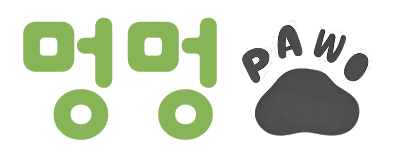
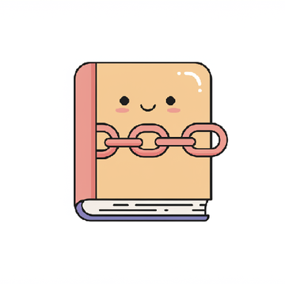
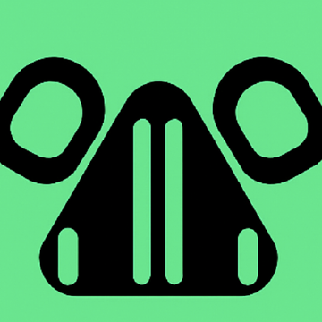
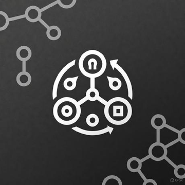
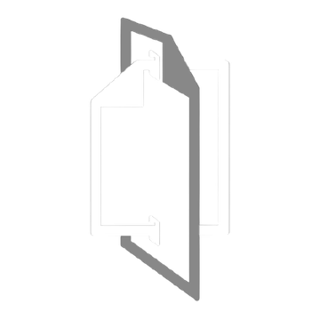
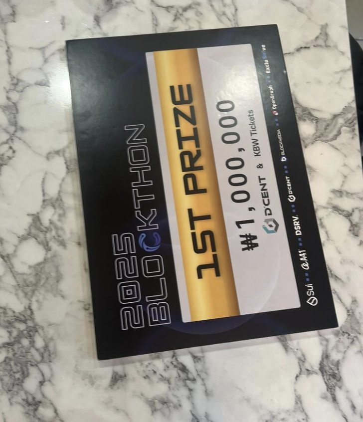
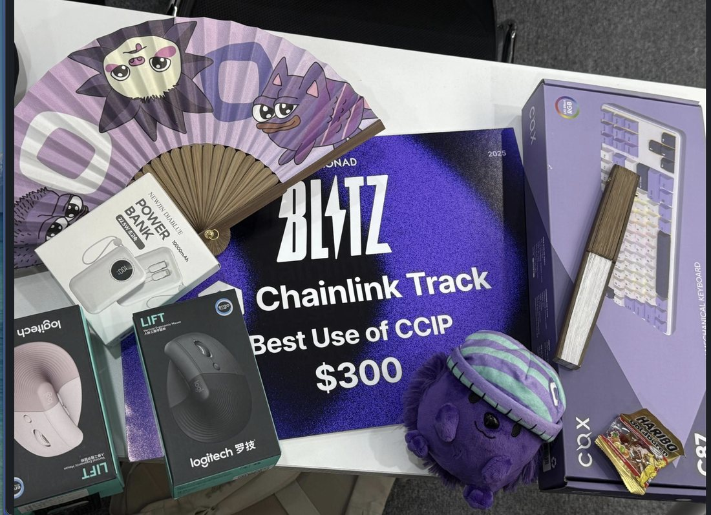
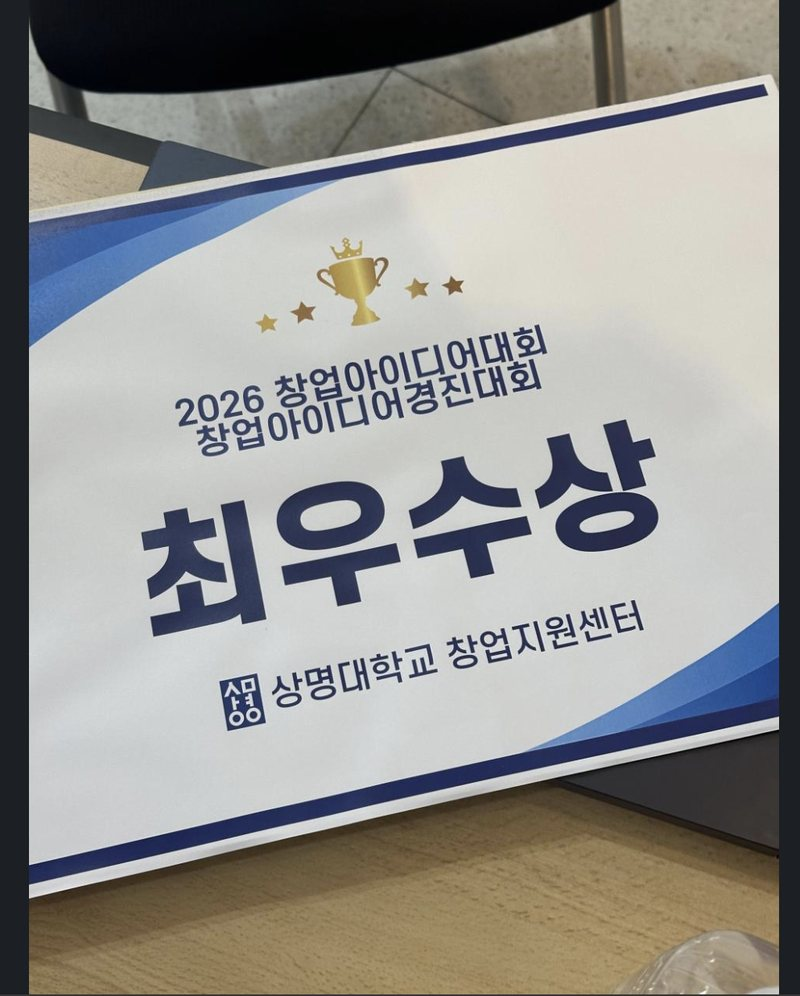

Besu / QBFT, DID멍멍포(DogDogPaw)
유기견에게 비문 사진으로 DID를 만들고, 입양으로 보호자가 바뀌는 순간을 블록체인에 남기는 입양과 후원 서비스입니다. Besu 네트워크와 컨트랙트, 서버 간 연동, Kubernetes 배포를 맡았습니다.
- Hyperledger Besu
- QBFT
- Solidity
- NestJS
- Go
- Kubernetes
처음 개발을 배운 건 백엔드였지만, 오래 붙잡게 된 질문은 "서로 믿지 않는 여러 컴퓨터가 어떻게 같은 상태에 합의하는가"였습니다. 이 질문이 재미있어서 블록체인을 공부하기 시작했습니다. 학회 BAY에서 PBFT부터 Mysticeti까지 합의 알고리즘을 따라가며 발표했고, 관심이 생길 때마다 Besu와 Hyperledger Fabric 네트워크를 Kubernetes에 직접 띄워 보며 노드가 블록을 주고받고 합의하는 과정을 공부했습니다.
공부하다 보니 직접 만들어 보고 싶은 것이 생겼습니다. 남는 컴퓨터를 스테이킹만으로 클러스터에 보탤 수 있다면 어떨까 하는 생각에서 DAAS-Vader를 기획했고, Sui에 스테이킹하면 그 머신이 Kubernetes 워커로 들어오는 구조를 아이디어부터 개발까지 직접 만들었습니다. 이 관심은 월드랜드로 이어져, GPU 머신을 네트워크에 붙이고 쓴 만큼 정산하는 GPU 렌탈 마켓의 노드 SDK를 만들었습니다.
지금은 수파리드에서 데이터 수집부터 저장, 인프라까지 맡고 있습니다. 분야는 달라졌지만 질문은 비슷했습니다. late event와 중복 이벤트를 어떻게 정확히 한 번만 반영할지, 장애가 나면 어느 checkpoint부터 다시 계산할지를 고민했습니다. 원리를 파고들어 이런 문제를 실제 제품에서 풀어낼 때 가장 큰 보람을 느낍니다.
광고 클릭부터 자사몰, 매장, 외부몰 구매까지 흩어진 고객 데이터를 하나의 어트리뷰션으로 잇는 옴니채널 고객 인텔리전스 플랫폼입니다.

Besu / QBFT, DID유기견에게 비문 사진으로 DID를 만들고, 입양으로 보호자가 바뀌는 순간을 블록체인에 남기는 입양과 후원 서비스입니다. Besu 네트워크와 컨트랙트, 서버 간 연동, Kubernetes 배포를 맡았습니다.

Fabric / etcdraft학생이 낸 회비는 학생회가 승인하고, 학생회가 쓴 돈은 학생이 투표로 허가하는 장부 서비스입니다. Fabric 네트워크를 AWS EKS에 배포해 운영하고, 서비스와 블록체인을 잇는 NestJS 서버를 만들었습니다.

K3s + Sui Move남는 컴퓨터를 가진 사람이 SUI를 맡기면 그 컴퓨터를 Kubernetes 워커로 받는 서버리스 플랫폼입니다. 아이디어를 내고, 워커가 클러스터에 join하는 경로부터 K3s control plane, Sui Move 컨트랙트, 체인 이벤트 처리까지 전체를 직접 설계하고 개발했습니다.

PBFT / P2PBFT 합의가 코드에서 어떻게 돌아가는지 확인하려고 만든 학습 구현입니다. PBFT 엔진은 Cosmos SDK가 쓰는 ABCI 2.0에 맞췄고, 노드 사이 연결을 맡는 P2P 라이브러리는 TCP부터 따로 만들었습니다.

HWP → Markdown, JSON한글(HWP) 문서를 PDF로 바꾸지 않고 파일 안의 레코드를 직접 읽어, 표 구조를 살린 Markdown과 JSON으로 바꾸는 엔진과 변환 서비스입니다. 엔진, 변환 서버, API, 평가 도구를 직접 설계하고 개발했습니다.



비잔틴 장군 문제와 Safety, Liveness부터 PBFT, HotStuff, DAG 기반 합의까지 정리하고, Sui가 Narwhal과 Bullshark에서 Mysticeti v2로 바뀐 이유를 설명했습니다. 마지막 장은 2026년 1월 14일 Sui 네트워크 중단을 합의 엔진의 가비지 컬렉션 시점 문제로 분석한 내용입니다.